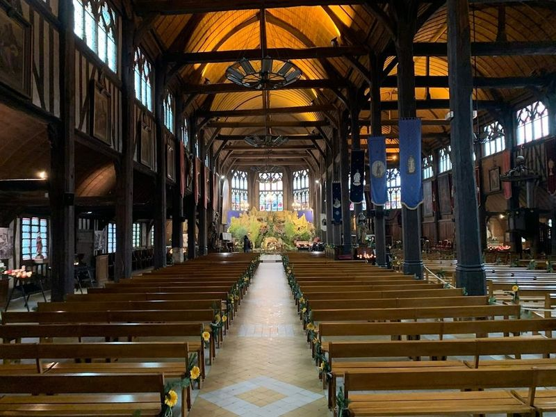
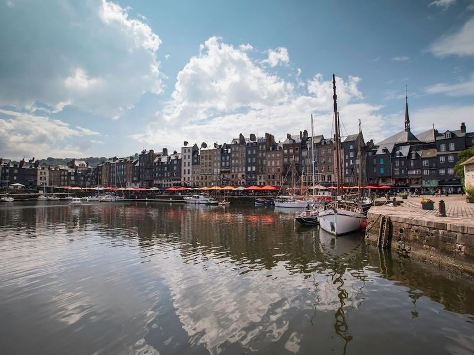
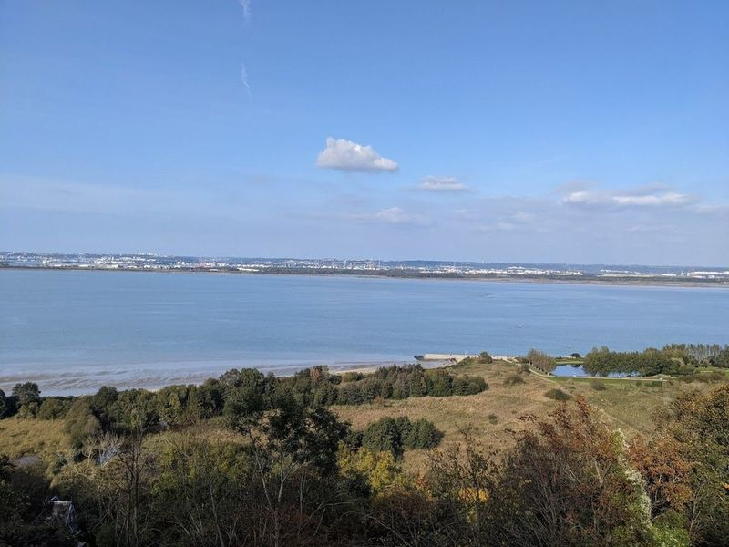
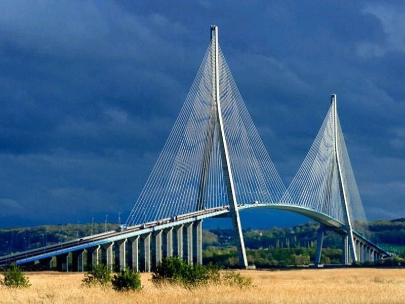
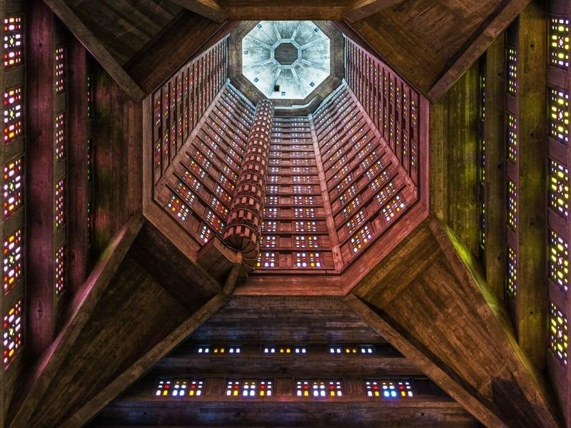
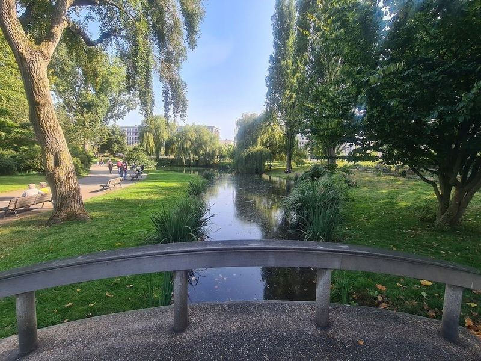
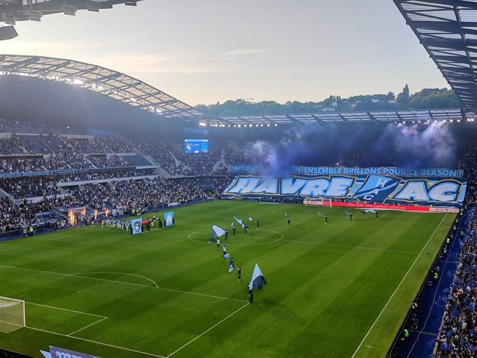
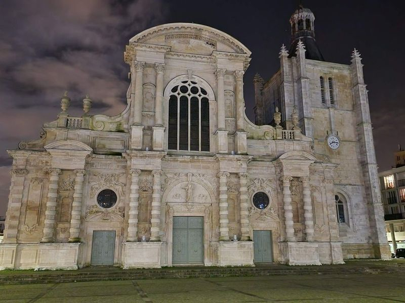
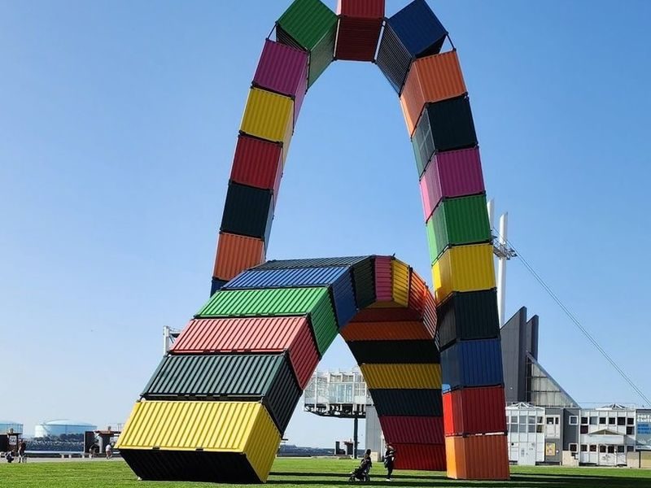
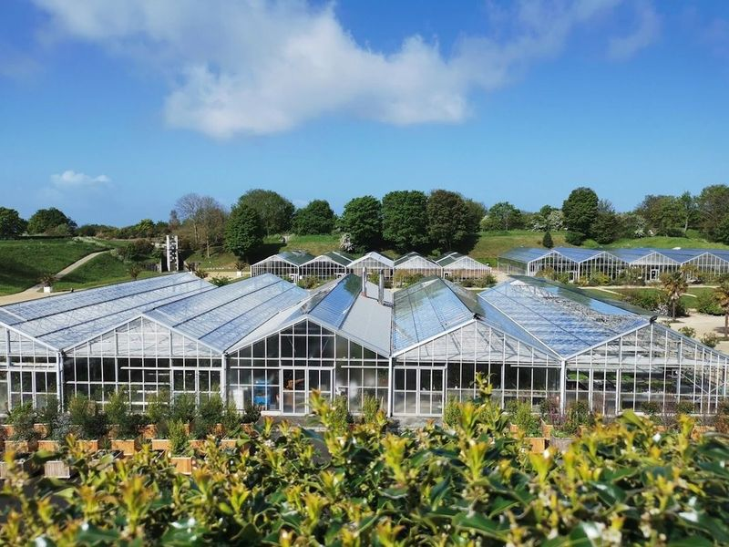

Explore Le Havre
A Brief History
Le Havre was founded in 1517 at the Seine estuary to give France a controlled Atlantic port when sandbars blocked older harbours upstream. Transatlantic emigration, coffee imports, and shipbuilding shaped quays and warehouses through the nineteenth century. Allied bombing in 1944 levelled the centre before Auguste Perret's reinforced-concrete grid rebuilt housing, churches, and the town hall as a UNESCO-listed model of post-war urban design on the Normandy coast.
Attractions Map
Top Sights & Activities

Église Sainte Catherine
Located in Honfleur, France, Église Sainte Catherine is a remarkable wooden church dating back to the 15th century. It stands as the oldest wooden church in France and is also the largest with a separate bell tower. The church's unique construction gives it the appearance of an upside-down ship's hull, with massive original wooden pillars and grand arcades.

Vieux Bassin
Vieux Bassin is a old harbor in Honfleur, lined with 16th–18th century houses and a carousel. The port was created in 1681 by demolishing existing coastal fortifications and expanding the existing port. It's a popular spot for tourists and amateur photographers due to the beautifully preserved historic homes reflecting in the calm waters, especially at night when lights and lanterns are lit.

Panorama du Mont-Joli
The Panorama du Mont-Joli is a tourist attraction located in Equemauville, about a 25-minute walk from the Vieux Bassin. It offers a view of Honfleur, including its lights at night, as well as the Normandy Bridge and the mouth of the Seine. The church nearby features bells that can be seen and heard outside, and there is also a telescope available for use.

Pont de Normandie
The Pont de Normandie, also known as the Normandy Bridge, is a remarkable cable-stayed toll bridge that was constructed in 1995. It spans the estuary of the River Seine, connecting the cities of Le Havre and Honfleur. The bridge features pedestrian, bike, and motor lanes, making it accessible to various modes of transportation.

St Joseph's Church
St Joseph's Church is a striking example of Brutalist architecture, designed by Auguste Perret. The church features an imposing octagonal tower and geometric stained-glass windows. Standing at 107 meters tall, the illuminated spire serves as a beacon visible from the sea. While Perret intended the church to serve as a memorial to those lost in war due to his atheistic beliefs, collaborator Raymond Audigier envisioned it as a symbol of gratitude for peace.

Square Saint-Roch
Square Saint-Roch is a famous attraction in downtown Le Havre, located near other notable sights like Porte Oceane and Avenue Foch. The park features a small but lake surrounded by large trees, making it an ideal place for relaxation and leisurely walks. It is well-maintained and lush with greenery, featuring two playgrounds for children to enjoy. While some travellers have noted the presence of mosquitoes, it remains a popular spot for locals and tourists alike.

Stade Oceane
Stade Oceane is a modern football stadium located in the city center, with a seating capacity of over 25,000 spectators. travellers have praised its comfortable seating and clean facilities during events like the Women's World Cup. The stadium offers a great view from every seat and has a well-designed layout for easy navigation. It has also been commended for its friendly staff and helpful volunteers, creating a pleasant atmosphere for watching games with friends and family.

Le Havre Cathedral
Le Havre Cathedral, also known as Cathedrale Notre-Dame du Havre, is a 16th-century stone cathedral that has stood the test of time, surviving the Allied bombing raids during WWII. This architectural gem showcases a blend of flamboyant Gothic and Baroque styles. Situated in the city of Le Havre on the northern coast of France, this UNESCO World Heritage site offers travellers a glimpse into its rich maritime history and modernist architecture.

Catena Containers Vincent GANIVET
Catena Containers Vincent Ganivet is a striking sculpture consisting of 21 containers, designed by the talented French artist Vincent Ganivet to commemorate the 500th anniversary of Le Havre. The colors and its location at the convergence of the port and downtown Perret make it an landmark often likened to Le Havre's version of the Eiffel Tower. This captivating installation has become a popular spot for travellers, with many capturing its beauty on Instagram.

Hanging Gardens
The Hanging Gardens in Le Havre, France, are a captivating destination for travelers seeking natural beauty and panoramic views. Situated on the site of a 19th-century Napoleonic fort overlooking the Seine estuary, these gardens offer vistas of the sea and port. travellers can explore four bastions adorned with rare plants collected by botanist explorers and wander through greenhouses filled with fragrant flora from around the world.